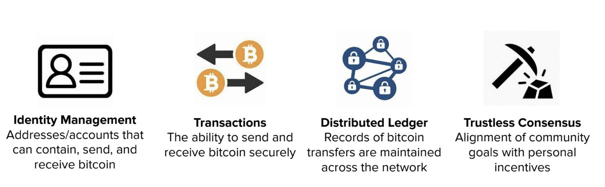
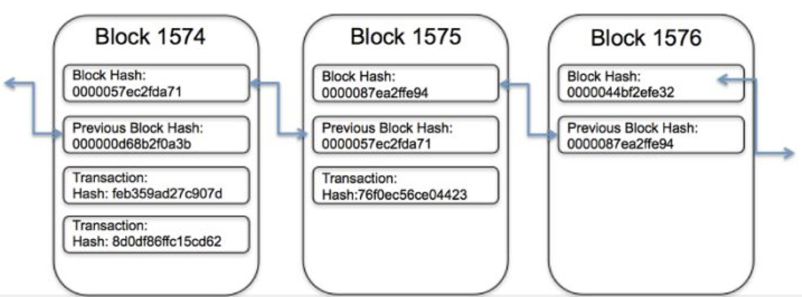

SO WHY USE BITCOIN OR CRYTOCURRENCY?
Compared with tranditional transactions where we use credit cards, Bitcoin transactions are decentralized, meaning there is no central entity that prints or controls the currency. A Bitcoin transaction cannot be reversed, it can only be refunded by the person receiving the funds, so in other words, SECURE YOU BITCOIN WALLET. In order for all this to happen, the system is implemented to be a peer-to-peer.
All Bitcoin transactions are stored publicly and permanently on the network, which means anyone can see the balance and transactions of any Bitcoin address. However, the identity of the user behind an address remains unknown until information is revealed during a purchase or in other circumstances. This may be good or not good in a couple of ways.
The Graph of the left shows the different components of BITCOIN.

Block-Chain is a type of database which Bitcoin is implemented on. Block-Chain stores data in blocks that are chained together.As new data comes in it is entered into a fresh block. Once the block is filled with data it is chained onto the previous block, which makes the data chained together in chronological order. The connectivity of how Block-Chains are connected together is discussed in the algorithms page. The most common way of using block-chains nowadays is as ledgers for transactions.
Blockchain allows untrusted parties to come to agreement on the state of a database, without using middle interference. Each block contains a hash (a digital fingerprint or unique identifier), timestamped batches of recent valid transactions, and the hash of the previous block. The previous block hash links the blocks together and prevents any block from being altered or a block being inserted between two existing blocks. In this way, each subsequent block strengthens the verification of the previous block and hence the entire blockchain.
The first figure on the left shows that if Alice wanted to make a transaction to Bob, the transaction would have to be broadcasted to everyone who is on the network.
The second figure on the let shows the inside of blocks and how they are connected. Each block contain block hashes of previous block to connect with them and contains all the current transactions that are processed.
